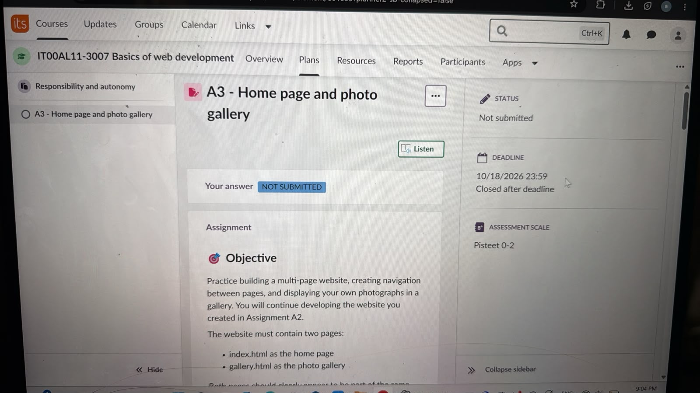
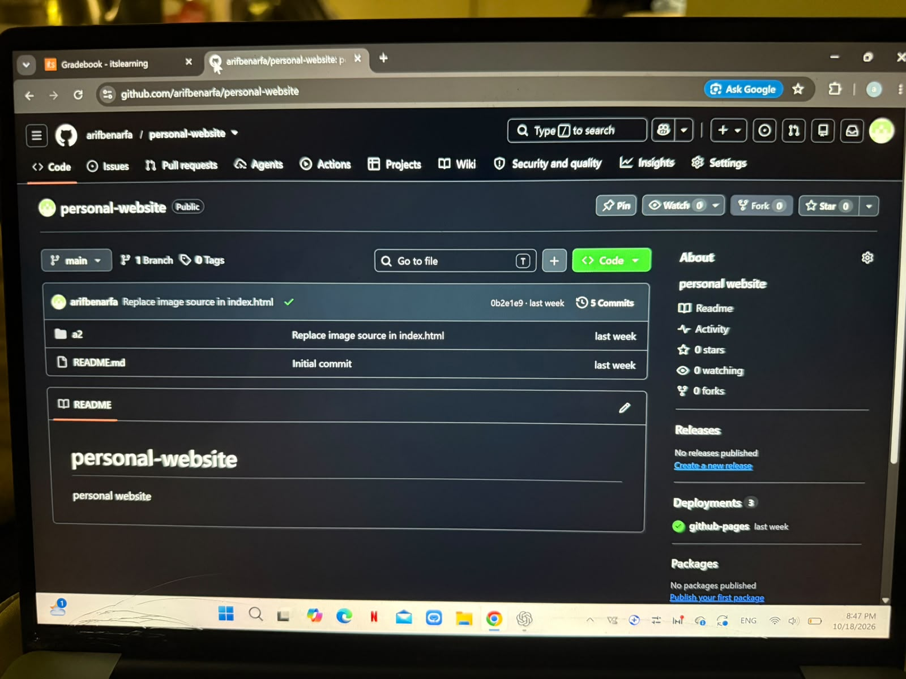
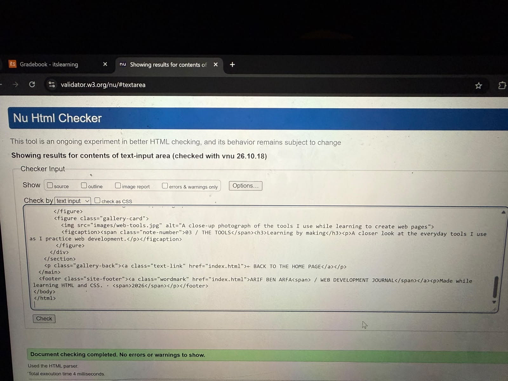

A3 PROJECT · NOTES FROM THE PROCESS
Behind the
build.
A small collection of photographs from the process of learning web development: the place I work, the ideas I write down, and the tools that bring a page to life.
THE PHOTO JOURNAL
Ideas, tools, and making.

The assignment brief
The project brief that guided the home page and photo gallery.

The project files
My repository keeps the website pages, styles, and photographs together.

Checking the markup
The W3C checker helps me find HTML mistakes before publishing the page.